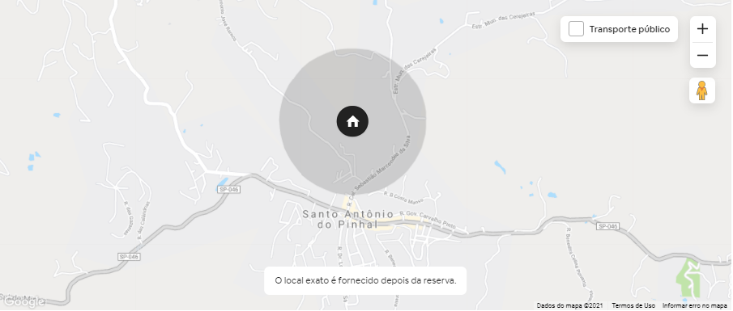

Linda casa térrea em terreno com leve declive de 30.000m² cercado por natureza. Acomoda 10 pessoas + 1 berço para bebe em 4 quartos 4 banheiros. Jardim e vista maravilhosas, piscina e pomar. Caseiro e arrumadeira inclusos e disponíveis.
Linda casa térrea em terreno com leve declive de 30.000m² cercado por natureza. Acomoda 10 pessoas + 1 berço em 4 quartos 4 banheiros. Jardim maravilhoso, piscina, churrasqueira, forno de pizza, sauna seca, pomar e horta. Nossa funcionaria, Dna Cida, pode ser contratada para limpeza e cozinhar. Favor tratar direto com ela.
Outros detalhes importantes para se atentarem:


Fomos muito bem recebidos. Dona Cida sempre prestativa, a casa tem uma estrutura muito boa. Foi muito bom nosso fim de semana, pretendemos voltar em breve.
Lugar extremamente lindo, rodeado de montanhas, animais da fazenda, cavalos, galinhas, faltou a vaca e o leite dela... mas o restante é perfeito. Lugar bom pra ir com familia, trilhas próximas para fazer a pe ou de cavalo. Dona Cida e Belchior são um charme a parte, extremamente solícitos, detalhe a comida da dona cida e maravilhosa. Recomendo a acomodação. Faltou apenas algumas placas no caminho para auxiliar na localização do sitio.
O Sítio Quitandinha é simplesmente maravilhoso! Espaço lindo, agradável, confortável, limpo, com funcionalidades de um hotel (roupa de cama e banho disponíveis, troca de lixo diariamente, opção de contratar uma excelente cozinheira) e tudo de muitíssimo bom gosto! Eu e minha família ficamos muito surpresos pois a realidade consegue ser ainda melhor do que nas fotos! Fora tudo isso, quando chegamos fomos muito bem recebidos pela Dona Cida com um delicioso bolo de cenoura com chocolate nos esperando para um café (um dos melhores bolos de cenoura que já comi!). Amamos e com certeza voltaremos mais vezes!
Não é a primeira vez (nem a segunda!) que fico na casa do Philip então já podemos começar por aí! Um espado muito bem cuidado, maravilhoso. Camas confortáveis, tudo super limpo e cozinha bem equipada, espaços em comum super aconchegantes e bem decorados. A propriedade é linda, muito grande e cheia de opções! E pra melhorar, cada vez que vamos tem novidade! Excelente! Parabéns pelo espaço e obrigado por tudo!
O lugar é incrível, exatamente como nas imagens! O Philip é super ágil nas respostas e auxilia com tudo o que for necessário para sua hospedagem ser inesquecível :) A caseira Dona Cida é muito prestativa e atenciosa, não nos deixou faltar nada! Voltaremos em breve :)
Gostamos muito de estar nessa casa e na propriedade que é bem cuidada. O espaço oferece elementos de área rural (alguns animais e cultivos), de natureza (algumas parcelas recuperadas de Mata Atlântica) e confortos "urbanos" (boa internet, bom mobiliário e equipamentos, boa roupa de cama e banho). O Belchior e a Cida também são gente fina e oferecem o apoio que é preciso. Especialmente, num período de pandemia, o imóvel é adequado porque você não precisa ser deslocar para ter o que fazer (piscina, churrasqueira, forno de pizza e até massagista a domicílio, que a Cida providenciou e deixou algumas tardes mais agradáveis ainda).
Santo Antônio do Pinhal, São Paulo, Brasil
🐕 Cachorros pequenos somente;